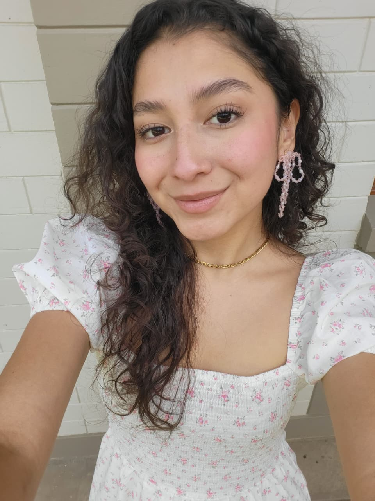

Cielo Zegarra
About me

My name is Cielo Zegarra, but I like being called Sky. I was born in Huanuco, Peru and I live with my family in a small town called Tomayquichua. I am currently studying Software Development at BYU Idaho. I love spend time with my family, I love to dance, to watch movies and I like to travel.
Lima, Peru

Peru is a country known for having one of the seven wonders of the world, like Machu Picchu. Located in the western South America. It is bordered by Brazil to the east, Equador and Colombia to the north, Chile to the south, and Pacific Ocean to the west. The country is the most diverse in food, animals, places, cities, etc. Its capital is Lima, the city which will have 3 temples soon